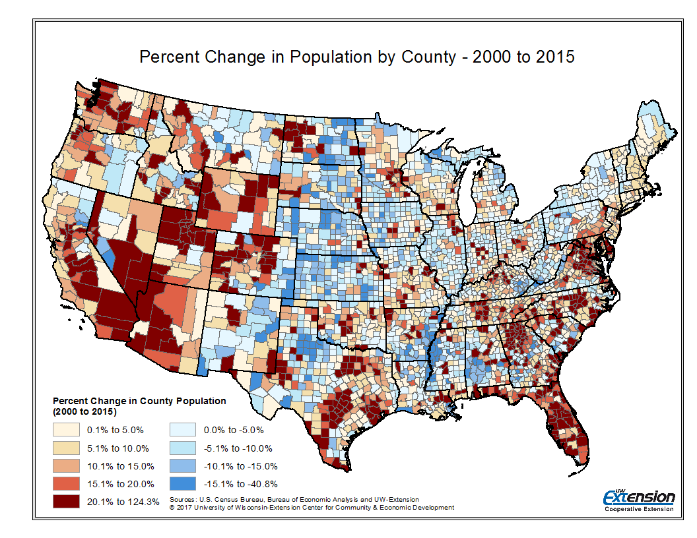
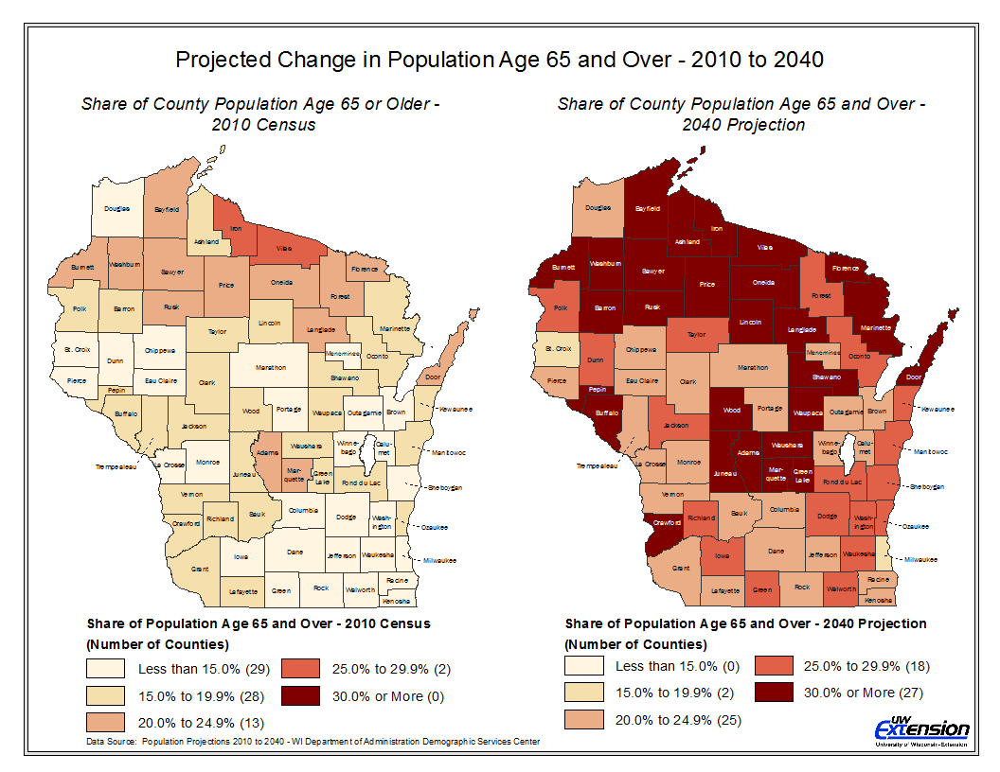
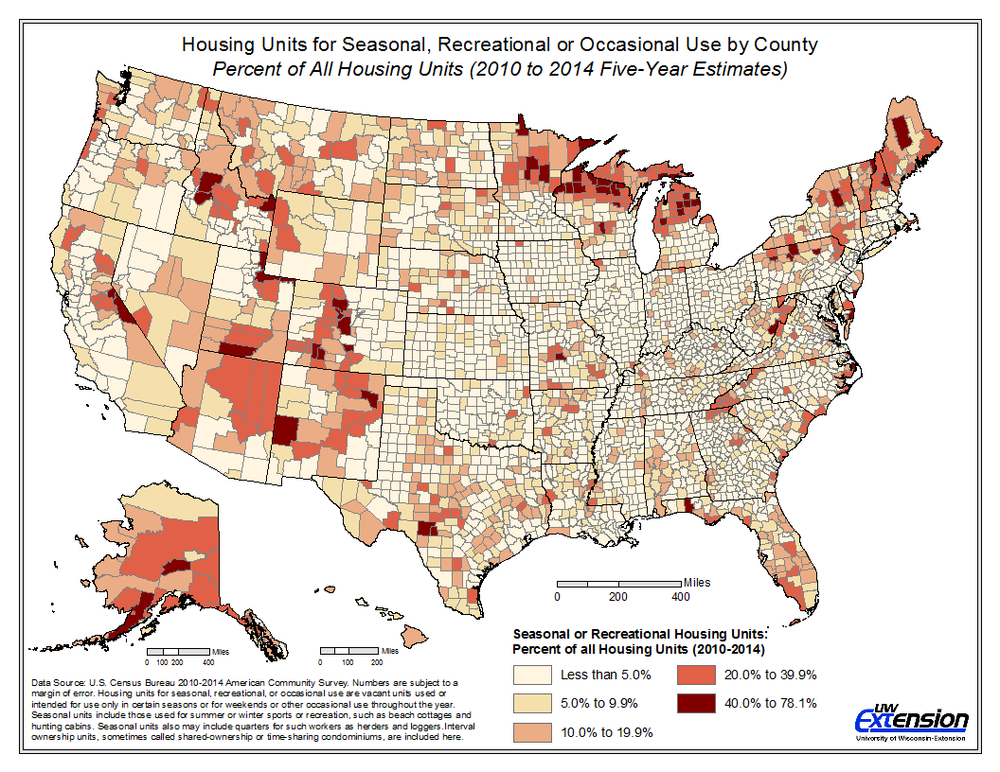

During my time as a Community Development Specialist, I have mapped countless socio-economic factors associated with demographic change, community assets, spatial mismatches in capital, industry agglomeration and economic upheaval. The examples below represent a small sample of these efforts.
Change in Population by County: 2000 to 2015
The periods before and after the Great Recession, which officially began in December 2007, were a time of remarkable change. Many rural counties throughout the Great Plains, Midwest and Northeast experienced significant declines in population.
Projected Change in Population Age 65 and Over: 2000 and 2040
Using population projections by age from the Wisconsin Department of Revenue, this map considers how the share of residents age 65 and over will change between 2010 and 2040. In 2010, only two of Wisconsin's 72 counties had 25 percent of their popualtion age 65 or older. By 2040, this number increases to 45 counties.
Seasonal and Recreational Homes by County: 2010-2014
Natural amenities offer assets that many regions can use as a foundation for growing their economies and to attract and retain residents. While the USDA has created an index for measuring natural amenity levels, this index overlooks many areas with high levels of natural amenities. This map of seasonal and reacreational homes offers another pespective on natural amenity availability.
{kind=link}